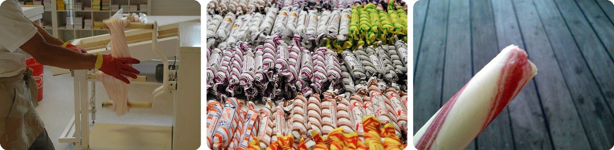
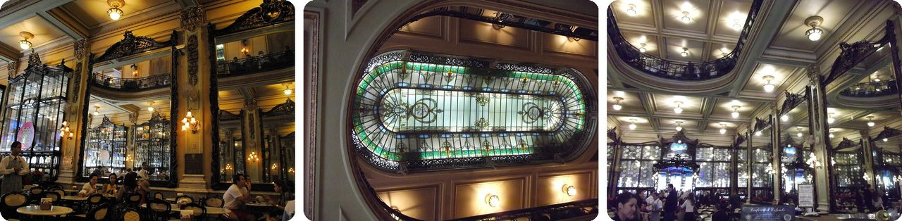

🌍 Top 10 Les confiseries célèbres, rigolotes et bizarres du monde
27 novembre 2026
1. 🏴 Le M&M's World de Londres est la plus grande confiserie du monde
 Le M&M's World a ouvert à Leicester Square, à Londres, le 13 juin 2011. Avec environ 35 000 pieds carrés, c'est la plus grande confiserie du monde, à peu près la taille de 12 courts de tennis.
Le M&M's World a ouvert à Leicester Square, à Londres, le 13 juin 2011. Avec environ 35 000 pieds carrés, c'est la plus grande confiserie du monde, à peu près la taille de 12 courts de tennis.
La ville voulait faire de la place une « destination de classe mondiale », en copiant la transformation de Times Square à New York. Alors une confiserie géante s'est installée dans l'ancien bâtiment du Swiss Centre.
Ce n'est pas la seule. Le premier M&M's World a ouvert sur le Strip de Las Vegas en 1997, et celui de New York a un « mur de chocolat » haut de deux étages, fait de 72 tubes remplis de bonbons.
C'est une confiserie assez grande pour y organiser un tournoi de tennis.
2. 🇺🇸 Dylan's Candy Bar est né d'un anniversaire Willy Wonka
 Dylan Lauren, la fille du créateur de mode Ralph Lauren, a regardé Charlie et la chocolaterie (la version avec Willy Wonka) le jour de ses six ans. Des années plus tard, en 2001, elle a ouvert sa propre confiserie à New York.
Dylan Lauren, la fille du créateur de mode Ralph Lauren, a regardé Charlie et la chocolaterie (la version avec Willy Wonka) le jour de ses six ans. Des années plus tard, en 2001, elle a ouvert sa propre confiserie à New York.
Dylan's Candy Bar propose environ 7 000 bonbons du monde entier. Lauren a dit qu'elle voulait mélanger la mode, l'art et la culture des bonbons.
À son meilleur moment, l'enseigne avait plus de 20 magasins. Son grand magasin de l'Upper East Side, à Manhattan, a fermé en 2021 à cause de problèmes d'argent, mais la marque a encore des boutiques à New York et à Los Angeles.
En gros, le rêve d'une petite fille devant un film est devenu une vraie confiserie.
3. 🇺🇸 Hershey's Chocolate World a un manège gratuit avec des vaches qui chantent
 À Hershey, en Pennsylvanie, les visiteurs pouvaient autrefois visiter la vraie usine de chocolat. Il venait tellement de monde que la visite ne suivait plus, alors le 30 juin 1973, Hershey a ouvert Chocolate World à la place.
À Hershey, en Pennsylvanie, les visiteurs pouvaient autrefois visiter la vraie usine de chocolat. Il venait tellement de monde que la visite ne suivait plus, alors le 30 juin 1973, Hershey a ouvert Chocolate World à la place.
L'attraction principale est un manège gratuit qui montre, étape par étape, comment on fabrique le chocolat. Aujourd'hui, il y a des vaches qui chantent, et à la fin on te donne une friandise Hershey's gratuite.
En 1988, le manège a eu un robot présentateur appelé CP-1. Il avait disparu en moins d'un an. Pendant ce temps, Chocolate World a attiré 1,4 million de visiteurs rien que la première année.
Imagine un manège de parc d'attractions qui se termine par le dessert.
4. 🇺🇸 Les boutiques de caramels d'Atlantic City ont vendu des bonbons dans des boîtes à huîtres
 Dès 1880, des stands de bonbons sur la promenade en bois d'Atlantic City, dans le New Jersey, vendaient du taffy, un caramel mou et élastique. Une histoire connue raconte qu'une tempête a éclaboussé un stand de taffy avec de l'eau de mer, et que le vendeur l'a appelé « taffy à l'eau salée ». Cette histoire est sans doute inventée.
Dès 1880, des stands de bonbons sur la promenade en bois d'Atlantic City, dans le New Jersey, vendaient du taffy, un caramel mou et élastique. Une histoire connue raconte qu'une tempête a éclaboussé un stand de taffy avec de l'eau de mer, et que le vendeur l'a appelé « taffy à l'eau salée ». Cette histoire est sans doute inventée.
Joseph Fralinger, un ancien souffleur de verre et marchand de poisson, a repris un stand de taffy en 1884. Il a eu une idée : vendre le taffy dans des boîtes d'une livre, comme souvenir.
Il a acheté 200 boîtes pour son premier week-end, et elles étaient toutes vendues le dimanche à midi. Alors il a couru dans un restaurant de fruits de mer voisin et a fini la journée en vendant le taffy dans des boîtes à huîtres. Des boutiques de taffy ouvertes dans les années 1800 en vendent encore sur la promenade aujourd'hui.
Autrement dit, c'est un souvenir de plage qui porte le nom d'une tempête qui n'a sans doute jamais eu lieu.
5. 🏴 La plus vieille confiserie d'Angleterre est ouverte depuis 1827
 Dans la petite ville de Pateley Bridge, dans le North Yorkshire, il y a une boutique qui s'appelle la Plus Vieille Confiserie d'Angleterre. Elle a ouvert en 1827, donc l'an prochain, elle aura 200 ans.
Dans la petite ville de Pateley Bridge, dans le North Yorkshire, il y a une boutique qui s'appelle la Plus Vieille Confiserie d'Angleterre. Elle a ouvert en 1827, donc l'an prochain, elle aura 200 ans.
Le bâtiment est encore plus vieux. Il a été construit en 1661, donc il avait déjà 166 ans quand la confiserie a ouvert.
En 2014, le Guinness World Records l'a reconnue comme la confiserie ouverte depuis le plus longtemps sans interruption. Elle vend toujours des bonbons d'autrefois, comme des boules à l'anis, de la réglisse et des soucoupes volantes au sorbet acidulé.
C'est une confiserie qui a servi environ huit générations d'enfants.
6. 🇸🇪 Les sucres d'orge à la menthe d'une veuve ont transformé une ville suédoise en pays des bonbons

En 1858, le mari d'Amalia Eriksson est mort quelques jours seulement après la naissance de leur bébé, la laissant seule avec sa petite fille. À l'époque, c'était très difficile pour une femme de créer une entreprise en Suède. Mais les villes donnaient une permission spéciale aux veuves pauvres, alors le 10 janvier 1859, la ville de Gränna l'a autorisée à vendre des bonbons.Elle fabriquait des polkagris, des bâtons de menthe rouges et blancs. Le nom veut dire « cochon polka » : la polka est une danse qui tourne beaucoup, et « cochon » était un vieux mot d'argot pour dire bonbon. La pâte de sucre est cuite, étirée et torsadée à la main, et elle a gardé la recette secrète jusqu'à sa mort, à 99 ans.
Aujourd'hui, Gränna n'a qu'environ 2 500 habitants, mais elle reçoit plus d'un million de visiteurs par an, et une vingtaine de boutiques y vendent des polkagris.
En gros, le bonbon d'une seule femme a transformé toute une ville en confiserie.
7. 🇦🇹 Demel, à Vienne, s'est battu au tribunal contre un hôtel pour un gâteau au chocolat
 Demel a ouvert à Vienne en 1786. En 1874, l'empereur en a fait le confiseur officiel de la cour, et l'impératrice Élisabeth, surnommée Sissi, en était cliente.
Demel a ouvert à Vienne en 1786. En 1874, l'empereur en a fait le confiseur officiel de la cour, et l'impératrice Élisabeth, surnommée Sissi, en était cliente.
Ses serveuses parlent encore aux clients d'une façon ancienne et super polie. Au lieu de « Vous avez choisi ? », elles demandent quelque chose comme « A-t-on déjà choisi ? ».
Puis est arrivée la guerre du gâteau. L'hôtel Sacher et Demel vendaient tous les deux un gâteau au chocolat appelé Sachertorte, et en 1954, l'hôtel a porté plainte. Ils se sont disputés pendant sept ans sur des choses comme le nom et une couche de confiture. En 1963, l'hôtel a obtenu les mots « The Original Sachertorte », et Demel un sceau en chocolat en forme de triangle.
Imagine deux pâtisseries qui jouent sept ans au tir à la corde pour un seul gâteau.
8. 🇹🇷 Hacı Bekir, à Istanbul, dit avoir inventé le loukoum en 1777
 En 1777, un confiseur appelé Bekir a ouvert une petite confiserie à Istanbul. Après son pèlerinage à La Mecque, les gens ont commencé à l'appeler « Hacı », un titre pour quelqu'un qui a fait ce voyage.
En 1777, un confiseur appelé Bekir a ouvert une petite confiserie à Istanbul. Après son pèlerinage à La Mecque, les gens ont commencé à l'appeler « Hacı », un titre pour quelqu'un qui a fait ce voyage.
La boutique dit que Bekir a créé le loukoum moderne, ou lokum, un petit cube de gelée tout mou saupoudré de sucre. D'après l'histoire de la boutique, il a remplacé la farine par de l'amidon, ce qui l'a rendu lisse et moelleux. Les historiens n'en sont pas si sûrs : des douceurs persanes semblables existaient des siècles plus tôt, et il n'y a pas de vraie preuve qu'il l'a inventé.
En tout cas, le palais ottoman achetait ses douceurs à la boutique, et Bekir est devenu le confiseur en chef du palais. Aujourd'hui, c'est la cinquième génération de sa famille qui dirige l'entreprise.
Autrement dit, c'est une boutique qui se vante d'un seul bonbon depuis presque 250 ans.
9. 🇧🇷 La Confeitaria Colombo de Rio ressemble à un palais de miroirs

Deux immigrés portugais ont ouvert la Confeitaria Colombo, une confiserie et un café, dans le centre de Rio de Janeiro en 1894.Entre 1912 et 1918, ils l'ont remplie de miroirs géants en cristal venus d'Anvers, en Belgique, encadrés de bois de rose sculpté. En 1922, ils ont ajouté un étage avec un salon de thé, et un trou dans le plafond du rez-de-chaussée permet de voir sa verrière en vitrail.
Tellement d'écrivains et d'artistes célèbres s'y retrouvaient qu'on l'appelait « une annexe de l'Académie brésilienne des lettres ». Des présidents, un roi des Belges et la reine Elizabeth II y sont aussi venus.
C'est une pâtisserie habillée comme une salle de bal.
10. 🇯🇵 Les dagashiya du Japon vendent des bonbons « sans valeur » aux enfants
 Les dagashi sont des bonbons et des snacks japonais pas chers, et une dagashiya est une petite boutique qui en vend. Le nom veut dire à peu près « snacks sans valeur ». Chacun coûte environ 10 à 200 yens, assez peu pour l'argent de poche d'un enfant.
Les dagashi sont des bonbons et des snacks japonais pas chers, et une dagashiya est une petite boutique qui en vend. Le nom veut dire à peu près « snacks sans valeur ». Chacun coûte environ 10 à 200 yens, assez peu pour l'argent de poche d'un enfant.
Ils sont faits pour les enfants. Les emballages colorés avec des mascottes aident ceux qui ne savent pas encore lire à choisir leur préféré, et certains viennent avec un petit jouet ou une chance de gagner un autre snack gratuit. L'un d'eux, le Fue Ramune, est un bonbon avec lequel on peut siffler.
Des années 1950 au début des années 1980, les dagashiya étaient l'endroit où on traînait après l'école. Quand les enfants ont eu plus d'argent à dépenser, à la fin des années 1980, beaucoup ont été remplacées par des supérettes.
Alors c'est une confiserie taillée pour l'argent de poche d'un enfant.
Le saviez-vous ?
Le gâteau pour lequel Demel et l'hôtel Sacher se sont battus a peut-être été inventé par un adolescent. Une histoire raconte que Franz Sacher a créé la Sachertorte en 1832 pour le prince Metternich, quand il n'avait que 15 ou 16 ans et apprenait encore la cuisine. Aucun écrit de l'époque ne prouve cette date, mais son fils Eduard l'a confirmée des années plus tard. Les plats inventés par des enfants et des ados pourraient être un thème bien sucré à explorer la prochaine fois.
Crédits photo (Wikimedia Commons)
- #1: M&M'S London Wall of M&M'S Picture 2.jpg by Mepatm, CC BY-SA 4.0
- #1: M&M's World, London 1.jpg by Philafrenzy, CC BY-SA 4.0
- #1: M&M'S London Facade.jpg by Mepatm, CC BY-SA 4.0
- #2: Dylan's Candy Bar, New York City (1628512247).jpg by Casper Moller from London, United Kingdom, CC BY 2.0
- #2: Dylan's Candy Bar candy artwork (flickr) by Rachel from Cupcakes Take the Cake, CC BY 2.0
- #2: Dylan's Candy Bar, Miami.jpg by Phillip Pessar, CC BY 2.0
- #3: Hershey Chocolate World, Hersheypark, 2013-08-10.jpg by Paulo Ordoveza from Washington, DC, Public domain
- #3: 2015-09-30 Chocolate World Roaster.jpg by Hmich176, CC BY-SA 4.0
- #3: Hershey's Chocolate World interior.jpg by Toohool, CC BY-SA 4.0
- #4: James Saltwater Taffy Shop.jpg by Concord, CC BY-SA 4.0
- #4: Salt Water Taffy Stretching and Wrapping Machines.jpg by Visitor7, CC BY-SA 3.0
- #4: Colourful wrapped salt water taffy (3747358050).jpg by Lara604 from Seattle, WA, CC BY 2.0
- #5: The Oldest Sweet Shop in England, High Street, Pateley Bridge - geograph.org.uk - 4621491.jpg by Bill Harrison, CC BY-SA 2.0
- #5: Pateley Bridge High Street, 'The Oldest Sweet Shop in England' window display - geograph.org.uk - 7887746.jpg by Michael Garlick, CC BY-SA 2.0
- #5: Oldest Sweet Shop of England 02.JPG by Immanuel Giel, CC BY-SA 3.0
- #6: Making polkagrisar.jpg by Niklas Morberg, CC BY-SA 2.0
- #6: Polkagrisar in Granna.jpg by Niklas Morberg, CC BY-SA 2.0
- #6: Flickr - cyclonebill - Polkagris.jpg by cyclone bill, CC BY-SA 2.0
- #7: Wien-Kohlmarkt-48-Nr 14-Cafe Demel-2009-gje.jpg by Gerd Eichmann, CC BY-SA 4.0
- #7: Demel Vienna 2011.jpg by E-W, CC BY-SA 3.0
- #7: Wien-Kohlmarkt-44-Nr 14-Cafe Demel-2009-gje.jpg by Gerd Eichmann, CC BY-SA 4.0
- #8: Ali Muhiddin Hacı Bekir (1777).jpg by rg-fotos, CC BY-SA 2.0
- #8: Marzipan and lokum.jpg by E4024, CC BY-SA 4.0
- #8: Hacı Bekir - Kadikoy.jpg by E4024, CC BY-SA 4.0
- #9: Confeitaria Colombo (2) (6738795079).jpg by Leandro Neumann Ciuffo, CC BY 2.0
- #9: Confeitaria Colombo.JPG by Eugenio Hansen, OFS, CC BY-SA 3.0
- #9: Confeitaria Colombo, Rio.JPG by Eugenio Hansen, OFS, CC BY-SA 3.0
- #10: Dagashiya Isobe-Shouten Oct 2025.jpg by Chacmool, CC BY-SA 4.0
- #10: Dagashi-ya-no-yume-museum1.jpg by Jason1208, CC BY-SA 3.0
- #10: Itohikiame.png by Mozzucu, CC BY 4.0


.jpg){kind=link}


.jpg){kind=link}


.jpg){kind=link}


_(6738795079).jpg){kind=link}